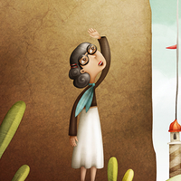

从前有个可爱的小姑娘，谁见了都喜欢，但最喜欢她的是她的外婆，简直是她要什么就给她什么。一次，外婆送给小姑娘1顶用丝绒做的小红帽，戴在她的头上正好合适。从此，姑娘再也不愿意戴任何别的帽子，于是大家便叫她“小红帽”。
一天，妈妈对 小红帽 说：“来，小红帽，这里有一块蛋糕和一瓶葡萄酒，快给外婆送去，外婆生病了，身子很虚弱，吃了这些就会好一些的。趁着现在天还没有黑，赶紧动身吧。在路上要好好走，不要跑，也不要离开大路，否则你会摔跤的，那样外婆就什么也吃不上了。到外婆家的时候，别忘了说‘早上好’，也不要一进屋就东瞧西瞅。”
“我会小心的。”小红帽对妈妈说，并且还和妈妈拉手作保证。
外婆住在村子外面的森林里，离小红帽家有很长一段路。小红帽刚走进森林就碰到了一条狼。小红帽不知道狼是坏家伙，所以一点也不怕它。
“你好，小红帽，”狼说。
小红帽儿歌 小红帽儿歌(5张)“你好，狼先生。”
“小红帽，这么早要到哪里去呀？”
“我要到外婆家去。”
“你那围裙下面有什么呀？”
“蛋糕和葡萄酒。昨天我们家烤了一些蛋糕，可怜的外婆生了病，要吃一些好东西才能恢复过来。”
“你外婆住在哪里呀，小红帽？”
“进了林子还有一段路呢。她的房子就在三棵大橡树下，低处围着核桃树篱笆。你一定知道的。”小红帽说。
狼在心中盘算着：“这小东西细皮嫩肉的，味道肯定比那老太婆要好。我要讲究一下策略，让她俩都逃不出我的手心。”于是它陪着小红帽走了一会儿，然后说：“小红帽，你看周围这些花多么美丽啊！干吗不回头看一看呢？还有这些小鸟，它们唱得多么动听啊！你大概根本没有听到吧？林子里的一切多么美好啊，而你却只管往前走，就像是去上学一样。”
小红帽抬起头来，看到阳光在树木间来回跳荡，美丽的鲜花在四周开放，便想：“也许我该摘一把鲜花给外婆，让她高兴高兴。现在天色还早，我不会去迟的。”她于是离开大路，走进林子去采花。她每采下一朵花，总觉得前面还有更美丽的花朵，便又向前走去，结果一直走到了林子深处。
-

-
-
讨论方向：
重点一、没有爸妈陪伴不要和陌生人说话
重点二、我们不是都像小红帽一样机智，有事情要 找警察叔叔解决